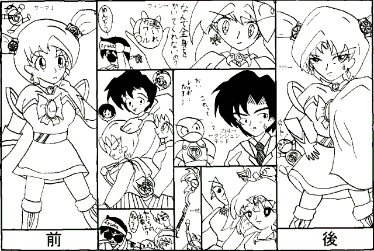

未完成魔法少女
Ｚｙｕｋａ
ひゅぅぅぅぅぅ・・・すこん！！
間の抜けた音と共に、空から落ちてきた物は・・・
「杖・・・？」
宇水力斗（うすい・りきと）は、いぶかしげにそれを拾い上げた。
・・・と、
「ご、ごめんなさあ〜いっ！！」
空から甲高い声が降ってくる。「・・・そ、それ、あたしのなんです！！」
声とともに降ってきたのは、十五、六歳の小柄な少女・・・
「・・・？」
力斗は、まじまじと彼女を見つめる。
顔やスタイルについては・・・まあ、イラストがあるのでそっちを見てください。
（手抜きやなぁ・・・）
「あ、あたし、サーマって言いますっ。魔法王シズン様の花嫁になるためにこの世界に魔法の修行に来たんですっ。でも、意地悪なウィンちゃんに杖を取られて困ってたんですっ！」
少女、サーマは尋ねられてもいないのに、自分から魔法少女だと話しだす。すると・・・
「誰が意地悪だって・・・？」
別の声が聞こえる。
「ウ、ウィンちゃんっ！？」
事態にまったくついていけず、ただただ呆然とする力斗の前で、二人の魔法少女が対峙する・・・
「・・・まぁいいわ。私はね、あなたをシズン様の花嫁にする気はないの。・・・これが何か分かる？」
そう言うウィンの手に、何か丸い物が握られている。そこには・・・
『魂イレカワール』
・・・と、書かれていた（うわっ、直球〜っ）。
「そうよ！！」
しゅん！！
ウィンは手の中のそれをサーマと力斗の間に投げる。
ピカッ！！
おきまり（？）の光とともに、サーマと力斗の身体と魂が入れ替わった（・・・早っ！）。
「な・・・な・・・な、なんてことするのよウィンちゃんっ！！」
サーマの魂が入り、女言葉で騒ぎ出した自分の身体を見ながら、サーマになった力斗の方は平然としていた。
・・・というか、まだ事態についていけないだけだったりして。
「フフフ、これならもう一個のアイテムも必要ないわね。リングかタムーにでも使おうかしら？」
「ウィンちゃん！！ 卑怯よ！！」
言い争う自分の身体と魔法少女。
少々恥ずかしかったので、通りすがりのタンジュンキッドからマントを奪い、それを羽織る。
（ま、そのうち元に戻してもらえるだろ・・・）
しかし、それは甘い考えだった・・・
「も、元に戻れない・・・？？」
「そうなのです、申し訳ありませんが・・・」
１８分４７秒後に来たサーマとウィンの師匠兼監督官という二人の魔女が、開口一番そう言った。
「『魂イレカワール』には、一度使えば二度目が効きにくくなるという副作用があるんです」
「・・・！！」
力斗はここにきて初めて、自分の身に降りかかった不幸を理解した。
「それに・・・ああなってしまった二人を引き離すのはちょっと・・・」
そう言って、魔女たちはサーマとウィンの方を見やる。
「ああ、サーマ、なんてりりしい身体なの・・・」
「これはあたしの本当の身体じゃないわ・・・。でもウィンちゃん、あなた、とってもかわいいわよ・・・」
・・・理解できない読者の方々に説明しておこう。
ウィンが持ってきていたもう一個のアイテム「コイスール」（またまた直球・・・）が間違って発動してしまったため、サーマ（姿は力斗）とウィンが恋に落ちてしまったのだ。
（原因は、力斗が長々続く口論に嫌気がさして、持っていた杖をウィンに投げつけたからなのだが・・・）
「本当に申し訳ありません。こうなった以上、あなたがその身体でも今まで通り生活できるよう、我々も全力を尽くしますから」
「・・・そのまま魔法王シズン様の花嫁になるって選択もあるよ。・・・その気があるならだけど」
二人の魔女の言葉を聞きながら、力斗は目の前が真っ暗になっていくのを感じていた。
その後・・・
力斗が元々通っていた高校に、いちゃつきながら登校するサーマ（ｉｎ力斗の身体）とウィン、怒って二人を見ようともしない力斗（ｉｎサーマの身体）の姿があった・・・

（ＥＮＤ）
・・・って、これで終わりかい？
この物語、勢いだけで描いたイラストの付属品として作った物です。
イラストもモノクロで未完成。
（だって皆さんのような華麗なＣＧ技術をＺｙｕｋａは持ってないんだもーん）
物語自体もどちらかというと未完成。
だからタイトルは「未完成魔法少女」っと・・・。
いいのかこれで・・・？
どなたか、ハイレベルなＣＧ技術をお持ちの方、高レベルなストーリーテラーな方、この物語とＣＧを完成させてみてください。
・・・って、それでいいのか俺！！
「よくないわい！！ とっとと自分で物語を作り上げ、俺を元の身体に戻せ！！」（ｂｙ力斗）
以上、吸血鬼物以外に挑戦したため、見事玉砕したＺｙｕｋａでした。
やっぱ俺には吸血鬼物が一番あってる・・・
「メタモル・ヴァンパイアその３」と「ガーディアン・ソウル」の完成を急ごう・・・
「俺はどうなる――――――――っ！？」（ｂｙ力斗）
□ 感想はこちらに □